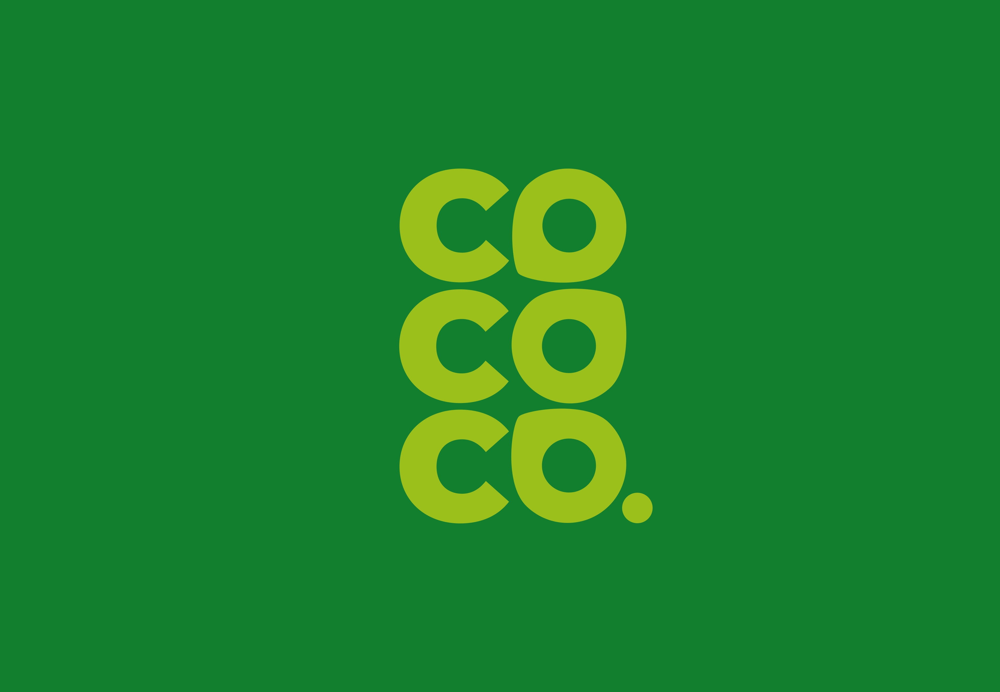
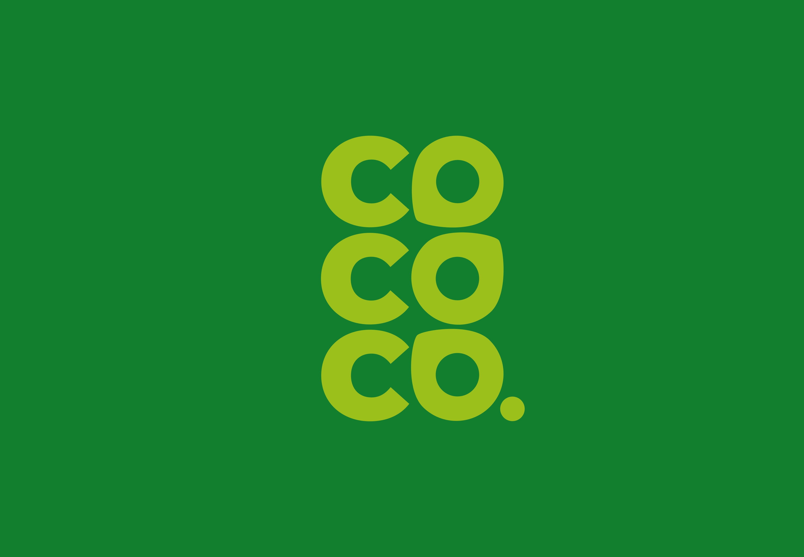

ARTIFACTS
1. Identity
BRAND IDENTITY
Coco Co. is a Pop-Up About Coconuts & Filipino Culture.
Drawing on Filipino tradition in its interactions, the experience educates and excites visitors while uplifting Filipino culture.
TIMELINE-
4 weeks
ROLE-
Sole Designer

CONTEXT
Filipino Days Are Filled With Coconuts.
While most people have tried a coconut, sellers typically leave out the significance of the coconut to cultures who regularly consume it. In the Philippines, for example, one third of the population receives their livelihood from the coconut industry. Linguistically, Tagalog has at least five different words for types of coconuts, and buko, young coconuts, are offered as symbols of hospitality and goodwill.
The Logo is as Adaptable As the Coconuts It Symbolizes
LOGO
The wordmark's coconut-shaped letters quickly contextualize the otherwise obscure popup.
Coconut-shaped letters for a coconut popup might feel a little bit on-the-nose, but since the popup already asks visitors to absorb so much information throughout the experience, the job of the brand is the spark instant delight and understanding.
The wordmark balances readability with symbolism to spark visitors' curiosity. Coconuts are the fruit of life in Filipino tradition, providing food, water, fuel, fertilizer, bowls, and more. The adaptability of coconuts inspired the tumbling coconut-shaped “o” type treatment.
 

PATTERN
An Ifugao pattern for bountiful harvests.
Coco Co. utilizes a simplified Linuhhung pattern, which originates from the Ifugao people, a Filipino ethnic group. The Ifugao believed wearing the Linuhhung pattern honored the agricultural gods and would lead to good harvests.

COLOR
Greens and neutrals are taken from the coconut and its environment.
The palette is primarily green, inspired by coconut trees, plus asphalt gray to embody the pop-up's urban nature and add balance.
TOUCHPOINTS
Touchpoints & collateral that promote human connection.
The pop-up provides 360-degree transparency and invites people to walk up and inquire about Coco Co. Signage is inviting and informational. Various materials, lights, textures, and patterns create a unique but comfortable, down-to-earth image. We also opted to avoid large ads like billboards and instead target locations like bus stops to further emphasize the feet-on-the-ground connection of Coco Co.